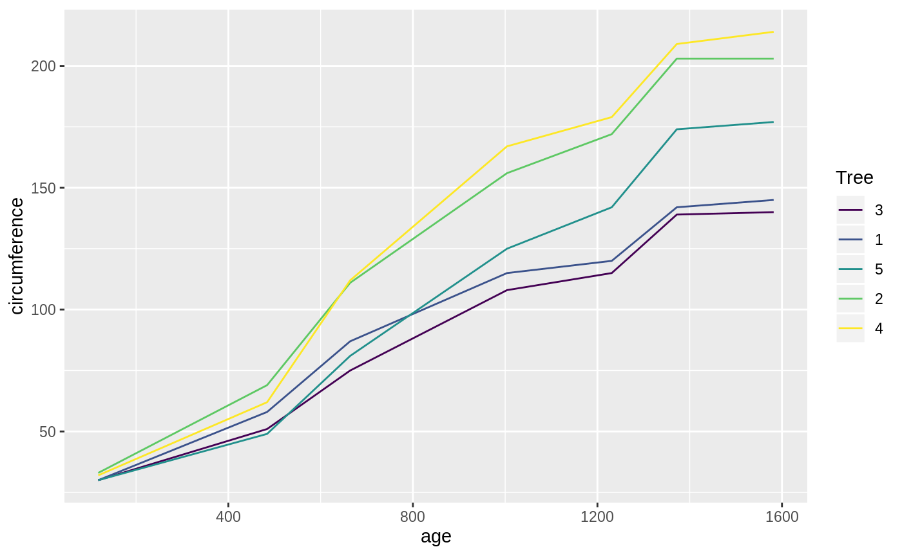

While broom is useful for summarizing the result of a single analysis in a consistent format, it is really designed for high-throughput applications, where you must combine results from multiple analyses. These could be subgroups of data, analyses using different models, bootstrap replicates, permutations, and so on. In particular, it plays well with the nest/unnest functions in tidyr and the map function in purrr.
Let’s try this on a simple dataset, the built-in Orange. We start by coercing Orange to a tibble. This gives a nicer print method that will especially useful later on when we start working with list-columns.
## # A tibble: 35 x 3
## Tree age circumference
## <ord> <dbl> <dbl>
## 1 1 118 30
## 2 1 484 58
## 3 1 664 87
## 4 1 1004 115
## 5 1 1231 120
## 6 1 1372 142
## 7 1 1582 145
## 8 2 118 33
## 9 2 484 69
## 10 2 664 111
## # … with 25 more rowsThis contains 35 observations of three variables: Tree, age, and circumference. Tree is a factor with five levels describing five trees. As might be expected, age and circumference are correlated:
## [1] 0.9135189
Suppose you want to test for correlations individually within each tree. You can do this with dplyr’s group_by:
## # A tibble: 5 x 2
## Tree correlation
## <ord> <dbl>
## 1 3 0.988
## 2 1 0.985
## 3 5 0.988
## 4 2 0.987
## 5 4 0.984(Note that the correlations are much higher than the aggregated one, and furthermore we can now see it is similar across trees).
Suppose that instead of simply estimating a correlation, we want to perform a hypothesis test with cor.test:
##
## Pearson's product-moment correlation
##
## data: Orange$age and Orange$circumference
## t = 12.9, df = 33, p-value = 1.931e-14
## alternative hypothesis: true correlation is not equal to 0
## 95 percent confidence interval:
## 0.8342364 0.9557955
## sample estimates:
## cor
## 0.9135189This contains multiple values we could want in our output. Some are vectors of length 1, such as the p-value and the estimate, and some are longer, such as the confidence interval. We can get this into a nicely organized tibble using the tidy function:
## # A tibble: 1 x 8
## estimate statistic p.value parameter conf.low conf.high method
## <dbl> <dbl> <dbl> <int> <dbl> <dbl> <chr>
## 1 0.914 12.9 1.93e-14 33 0.834 0.956 Pears…
## # … with 1 more variable: alternative <chr>Often, we want to perform multiple tests or fit multiple models, each on a different part of the data. In this case, we recommend a nest-map-unnest workflow. For example, suppose we want to perform correlation tests for each different tree. We start by nesting our data based on the group of interest:
Then we run a correlation test for each nested tibble using purrr::map:
## # A tibble: 5 x 3
## Tree data test
## <ord> <list<df[,2]>> <list>
## 1 1 [7 × 2] <htest>
## 2 2 [7 × 2] <htest>
## 3 3 [7 × 2] <htest>
## 4 4 [7 × 2] <htest>
## 5 5 [7 × 2] <htest>This results in a list-column of S3 objects. We want to tidy each of the objects, which we can also do with map.
nested %>%
mutate(
test = map(data, ~ cor.test(.x$age, .x$circumference)), # S3 list-col
tidied = map(test, tidy)
) ## # A tibble: 5 x 4
## Tree data test tidied
## <ord> <list<df[,2]>> <list> <list>
## 1 1 [7 × 2] <htest> <tibble [1 × 8]>
## 2 2 [7 × 2] <htest> <tibble [1 × 8]>
## 3 3 [7 × 2] <htest> <tibble [1 × 8]>
## 4 4 [7 × 2] <htest> <tibble [1 × 8]>
## 5 5 [7 × 2] <htest> <tibble [1 × 8]>Finally, we want to unnest the tidied data frames so we can see the results in a flat tibble. All together, this looks like:
Orange %>%
nest(-Tree) %>%
mutate(
test = map(data, ~ cor.test(.x$age, .x$circumference)), # S3 list-col
tidied = map(test, tidy)
) %>%
unnest(tidied, .drop = TRUE)## # A tibble: 5 x 11
## Tree data test estimate statistic p.value parameter conf.low
## <ord> <list<> <lis> <dbl> <dbl> <dbl> <int> <dbl>
## 1 1 [7 × 2] <hte… 0.985 13.0 4.85e-5 5 0.901
## 2 2 [7 × 2] <hte… 0.987 13.9 3.43e-5 5 0.914
## 3 3 [7 × 2] <hte… 0.988 14.4 2.90e-5 5 0.919
## 4 4 [7 × 2] <hte… 0.984 12.5 5.73e-5 5 0.895
## 5 5 [7 × 2] <hte… 0.988 14.1 3.18e-5 5 0.916
## # … with 3 more variables: conf.high <dbl>, method <chr>,
## # alternative <chr>Note that the .drop argument to tidyr::unnest is often useful.
This workflow becomes even more useful when applied to regressions. Untidy ouput for a regression looks like:
##
## Call:
## lm(formula = age ~ circumference, data = Orange)
##
## Residuals:
## Min 1Q Median 3Q Max
## -317.88 -140.90 -17.20 96.54 471.16
##
## Coefficients:
## Estimate Std. Error t value Pr(>|t|)
## (Intercept) 16.6036 78.1406 0.212 0.833
## circumference 7.8160 0.6059 12.900 1.93e-14 ***
## ---
## Signif. codes: 0 '***' 0.001 '**' 0.01 '*' 0.05 '.' 0.1 ' ' 1
##
## Residual standard error: 203.1 on 33 degrees of freedom
## Multiple R-squared: 0.8345, Adjusted R-squared: 0.8295
## F-statistic: 166.4 on 1 and 33 DF, p-value: 1.931e-14where we tidy these results, we get multiple rows of output for each model:
## # A tibble: 2 x 5
## term estimate std.error statistic p.value
## <chr> <dbl> <dbl> <dbl> <dbl>
## 1 (Intercept) 16.6 78.1 0.212 8.33e- 1
## 2 circumference 7.82 0.606 12.9 1.93e-14Now we can handle multiple regressions at once using exactly the same workflow as before:
Orange %>%
nest(-Tree) %>%
mutate(
fit = map(data, ~ lm(age ~ circumference, data = .x)),
tidied = map(fit, tidy)
) %>%
unnest(tidied)## # A tibble: 10 x 8
## Tree data fit term estimate std.error statistic p.value
## <ord> <list<df[,> <list> <chr> <dbl> <dbl> <dbl> <dbl>
## 1 1 [7 × 2] <lm> (Interce… -265. 98.6 -2.68 4.36e-2
## 2 1 [7 × 2] <lm> circumfe… 11.9 0.919 13.0 4.85e-5
## 3 2 [7 × 2] <lm> (Interce… -132. 83.1 -1.59 1.72e-1
## 4 2 [7 × 2] <lm> circumfe… 7.80 0.560 13.9 3.43e-5
## 5 3 [7 × 2] <lm> (Interce… -210. 85.3 -2.46 5.74e-2
## 6 3 [7 × 2] <lm> circumfe… 12.0 0.835 14.4 2.90e-5
## 7 4 [7 × 2] <lm> (Interce… -76.5 88.3 -0.867 4.26e-1
## 8 4 [7 × 2] <lm> circumfe… 7.17 0.572 12.5 5.73e-5
## 9 5 [7 × 2] <lm> (Interce… -54.5 76.9 -0.709 5.10e-1
## 10 5 [7 × 2] <lm> circumfe… 8.79 0.621 14.1 3.18e-5You can just as easily use multiple predictors in the regressions, as shown here on the mtcars dataset. We nest the data into automatic and manual cars (the am column), then perform the regression within each nested tibble.
## # A tibble: 32 x 11
## mpg cyl disp hp drat wt qsec vs am gear carb
## <dbl> <dbl> <dbl> <dbl> <dbl> <dbl> <dbl> <dbl> <dbl> <dbl> <dbl>
## 1 21 6 160 110 3.9 2.62 16.5 0 1 4 4
## 2 21 6 160 110 3.9 2.88 17.0 0 1 4 4
## 3 22.8 4 108 93 3.85 2.32 18.6 1 1 4 1
## 4 21.4 6 258 110 3.08 3.22 19.4 1 0 3 1
## 5 18.7 8 360 175 3.15 3.44 17.0 0 0 3 2
## 6 18.1 6 225 105 2.76 3.46 20.2 1 0 3 1
## 7 14.3 8 360 245 3.21 3.57 15.8 0 0 3 4
## 8 24.4 4 147. 62 3.69 3.19 20 1 0 4 2
## 9 22.8 4 141. 95 3.92 3.15 22.9 1 0 4 2
## 10 19.2 6 168. 123 3.92 3.44 18.3 1 0 4 4
## # … with 22 more rowsmtcars %>%
nest(-am) %>%
mutate(
fit = map(data, ~ lm(wt ~ mpg + qsec + gear, data = .x)), # S3 list-col
tidied = map(fit, tidy)
) %>%
unnest(tidied)## # A tibble: 8 x 8
## am data fit term estimate std.error statistic p.value
## <dbl> <list<df[,10> <list> <chr> <dbl> <dbl> <dbl> <dbl>
## 1 1 [13 × 10] <lm> (Interce… 4.28 3.46 1.24 2.47e-1
## 2 1 [13 × 10] <lm> mpg -0.101 0.0294 -3.43 7.50e-3
## 3 1 [13 × 10] <lm> qsec 0.0398 0.151 0.264 7.98e-1
## 4 1 [13 × 10] <lm> gear -0.0229 0.349 -0.0656 9.49e-1
## 5 0 [19 × 10] <lm> (Interce… 4.92 1.40 3.52 3.09e-3
## 6 0 [19 × 10] <lm> mpg -0.192 0.0443 -4.33 5.91e-4
## 7 0 [19 × 10] <lm> qsec 0.0919 0.0983 0.935 3.65e-1
## 8 0 [19 × 10] <lm> gear 0.147 0.368 0.398 6.96e-1What if you want not just the tidy output, but the augment and glance outputs as well, while still performing each regression only once? Since we’re using list-columns, we can just fit the model once and use multiple list-columns to store the tidied, glanced and augmented outputs.
regressions <- mtcars %>%
nest(-am) %>%
mutate(
fit = map(data, ~ lm(wt ~ mpg + qsec + gear, data = .x)),
tidied = map(fit, tidy),
glanced = map(fit, glance),
augmented = map(fit, augment)
)
regressions %>%
unnest(tidied)## # A tibble: 8 x 10
## am data fit term estimate std.error statistic p.value glanced
## <dbl> <list<df> <lis> <chr> <dbl> <dbl> <dbl> <dbl> <list>
## 1 1 [13 × 10] <lm> (Int… 4.28 3.46 1.24 2.47e-1 <tibbl…
## 2 1 [13 × 10] <lm> mpg -0.101 0.0294 -3.43 7.50e-3 <tibbl…
## 3 1 [13 × 10] <lm> qsec 0.0398 0.151 0.264 7.98e-1 <tibbl…
## 4 1 [13 × 10] <lm> gear -0.0229 0.349 -0.0656 9.49e-1 <tibbl…
## 5 0 [19 × 10] <lm> (Int… 4.92 1.40 3.52 3.09e-3 <tibbl…
## 6 0 [19 × 10] <lm> mpg -0.192 0.0443 -4.33 5.91e-4 <tibbl…
## 7 0 [19 × 10] <lm> qsec 0.0919 0.0983 0.935 3.65e-1 <tibbl…
## 8 0 [19 × 10] <lm> gear 0.147 0.368 0.398 6.96e-1 <tibbl…
## # … with 1 more variable: augmented <list>## # A tibble: 2 x 17
## am data fit tidied r.squared adj.r.squared sigma statistic
## <dbl> <list<df> <lis> <list> <dbl> <dbl> <dbl> <dbl>
## 1 1 [13 × 10] <lm> <tibb… 0.833 0.778 0.291 15.0
## 2 0 [19 × 10] <lm> <tibb… 0.625 0.550 0.522 8.32
## # … with 9 more variables: p.value <dbl>, df <dbl>, logLik <dbl>,
## # AIC <dbl>, BIC <dbl>, deviance <dbl>, df.residual <int>, nobs <int>,
## # augmented <list>## # A tibble: 32 x 15
## am data fit tidied glanced wt mpg qsec gear .fitted
## <dbl> <list<df> <lis> <list> <list> <dbl> <dbl> <dbl> <dbl> <dbl>
## 1 1 [13 × 10] <lm> <tibb… <tibbl… 2.62 21 16.5 4 2.73
## 2 1 [13 × 10] <lm> <tibb… <tibbl… 2.88 21 17.0 4 2.75
## 3 1 [13 × 10] <lm> <tibb… <tibbl… 2.32 22.8 18.6 4 2.63
## 4 1 [13 × 10] <lm> <tibb… <tibbl… 2.2 32.4 19.5 4 1.70
## 5 1 [13 × 10] <lm> <tibb… <tibbl… 1.62 30.4 18.5 4 1.86
## 6 1 [13 × 10] <lm> <tibb… <tibbl… 1.84 33.9 19.9 4 1.56
## 7 1 [13 × 10] <lm> <tibb… <tibbl… 1.94 27.3 18.9 4 2.19
## 8 1 [13 × 10] <lm> <tibb… <tibbl… 2.14 26 16.7 5 2.21
## 9 1 [13 × 10] <lm> <tibb… <tibbl… 1.51 30.4 16.9 5 1.77
## 10 1 [13 × 10] <lm> <tibb… <tibbl… 3.17 15.8 14.5 5 3.15
## # … with 22 more rows, and 5 more variables: .resid <dbl>,
## # .std.resid <dbl>, .hat <dbl>, .sigma <dbl>, .cooksd <dbl>By combining the estimates and p-values across all groups into the same tidy data frame (instead of a list of output model objects), a new class of analyses and visualizations becomes straightforward. This includes
In each of these cases, we can easily filter, facet, or distinguish based on the term column. In short, this makes the tools of tidy data analysis available for the results of data analysis and models, not just the inputs.